北京，2026年10月16日——继8月28日安徒生系列AI儿童产品在上海全球首发后，超级球球推动经典童话与人工智能结合的探索，迎来产品走向市场的新进展。
10月16日，安徒生《丑小鸭》AI双语启蒙机器人全球发售启动仪式在北京陶朱新造局正大中心店举行。丹麦安徒生博物馆代表Casper Tollerud、超级有爱（杭州）智能科技有限公司创始人元晓帅博士、陶朱新造局代表闫军、京东代表易旺君等嘉宾出席活动，共同启动产品预售。
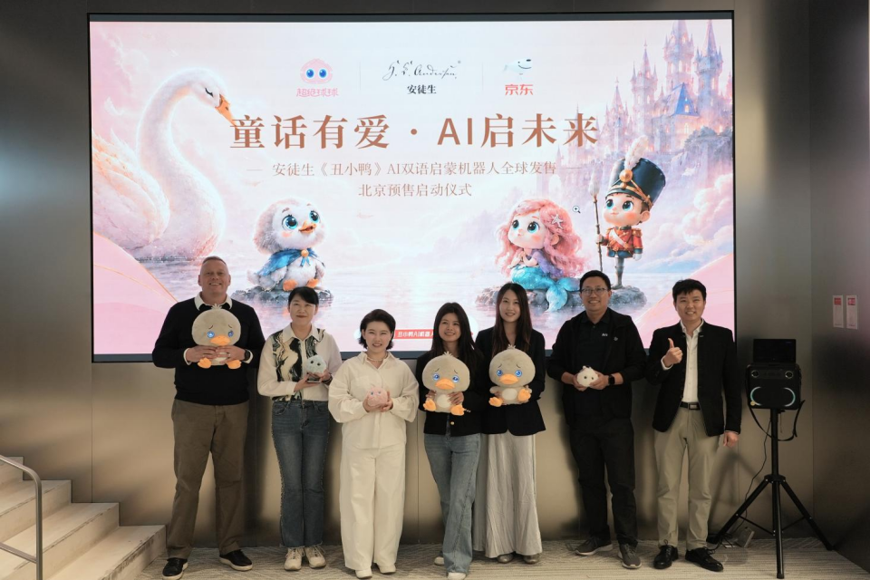
作为安徒生系列中首款开启发售的产品，丑小鸭AI双语启蒙机器人将通过京东众筹开启线上预售，并在陶朱新造局多家线下店铺提供体验与预订服务。从上海的系列发布到北京的预售启动，安徒生童话中的角色，开始以能够对话、互动的AI伙伴形态走向家庭。
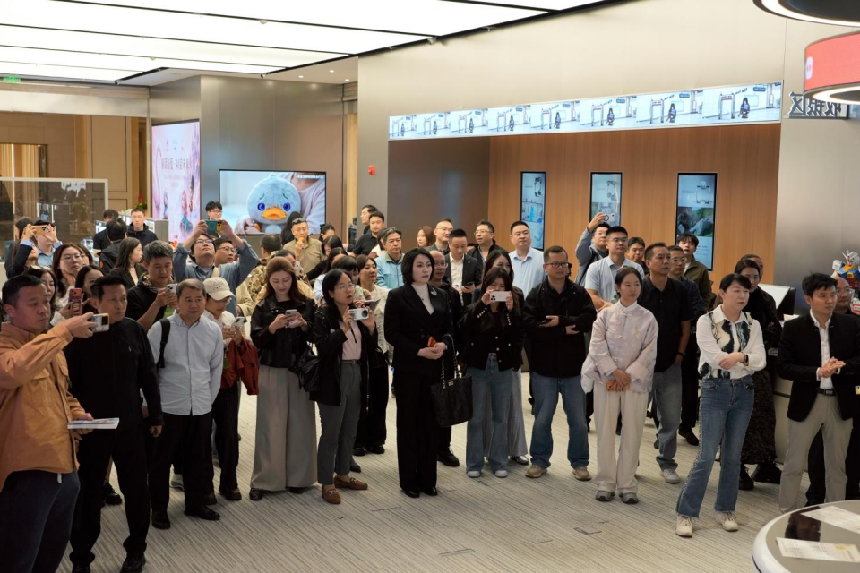
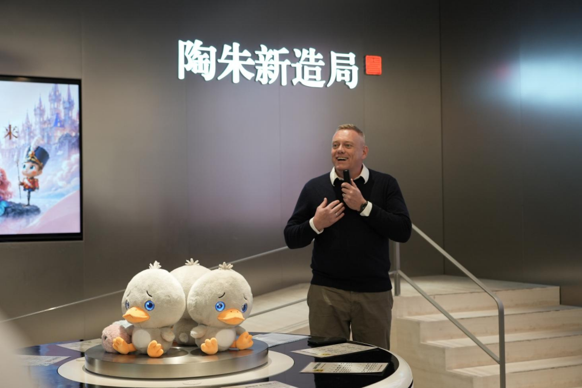
从上海首发、IFA亮相到北京预售，丑小鸭率先走向家庭
8月28日，超级球球在丹麦王国驻上海总领事馆举行安徒生系列AI儿童产品全球首发活动，推出涵盖智能双语有声书、丑小鸭AI智能对话毛绒版、安徒生IP限定版AI潮玩手办及联合IP产品的四大系列。
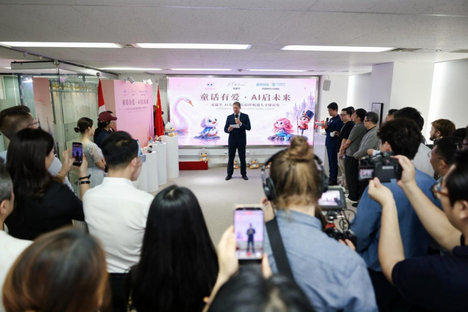
此后，丑小鸭AI双语启蒙机器人亮相德国柏林国际电子消费品展览会（IFA），并获得BBC等媒体报道。此次在北京启动全球预售，进一步将产品从国际展会的展示与交流，推进到面向消费者的体验和预订阶段。丑小鸭也成为安徒生系列中首款开启发售的产品。
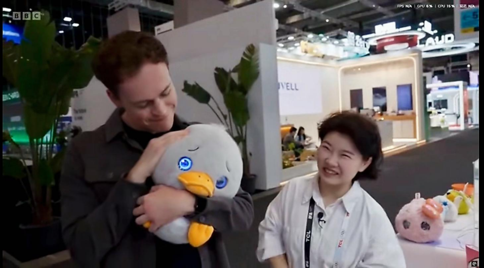
活动现场，超级有爱联合创始人、北京师范大学应用心理学博士郭凯燕为产品揭幕，介绍其产品定位与适用年龄，并展示AI对话、童话内容和双语启蒙等核心功能。
对于超级球球而言，丑小鸭的发售也是“让经典童话人物拥有数字生命”这一产品方向的具体实践：让童话角色从故事中的形象，成为孩子可以交流、共同探索的日常伙伴。
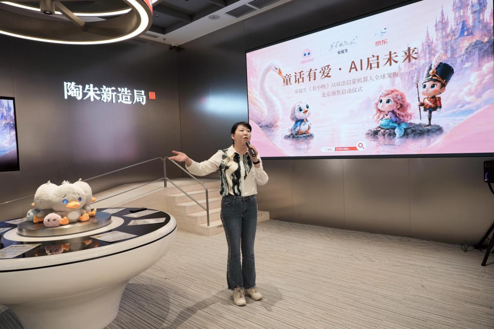
为什么是丑小鸭：让经典故事回应孩子的成长需要
在安徒生众多经典人物中，丑小鸭承载着关于自我认同、接纳与成长的故事。这也是超级球球选择它作为首款发售产品的重要原因。
元晓帅博士在致辞中回忆，小时候，人们记住的往往是丑小鸭最终变成了天鹅；长大后，更能体会它一路经历的孤单、不安与自我怀疑，以及它对接纳、友谊和陪伴的渴望。
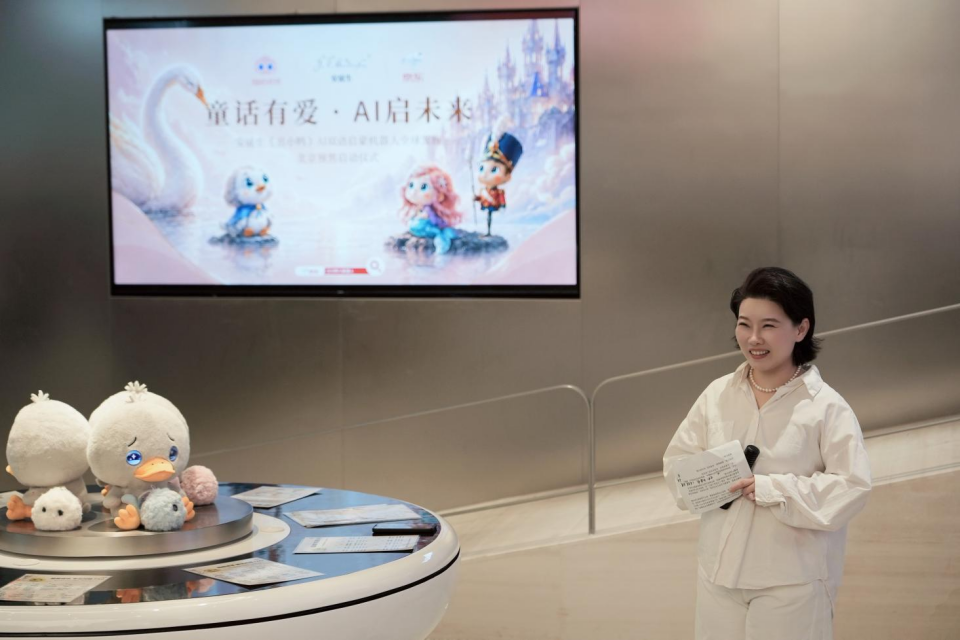
“这些感受，也可能出现在今天的孩子身上。有时孩子不知如何说，但他们同样希望有人愿意听、有人愿意理解，也有人在遇到困难时，给他们鼓励和支持。”元晓帅博士表示，这正是超级有爱持续关注儿童心理健康与情感AI的出发点。
在这一理念下，丑小鸭AI双语启蒙机器人将童话内容、双语互动与成长陪伴结合，希望孩子在听故事、表达与探索的过程中，逐渐感受到：自己的感受可以被说出来，自己的不同值得被尊重，成长也可以按照自己的节奏发生。
“我们始终把‘是否能真正支持到孩子的成长’作为衡量产品成败的标准。对市场来说，一个孩子可能只是数万、数十万用户中的一位。但对孩子来说，童年只有一次，所以，每一个孩子，都值得我们百分之百的用心。”元晓帅博士说。
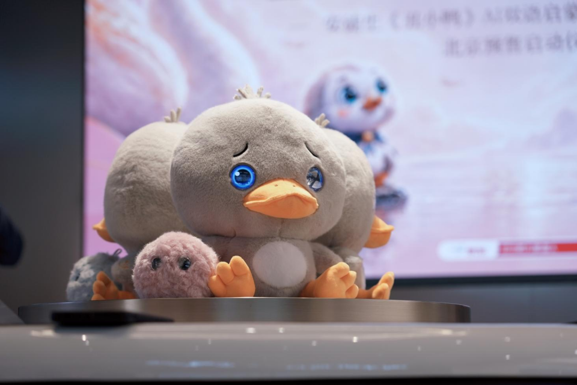
携手京东与陶朱新造局，连接线上预售与线下体验
随着产品开启预售，如何让家庭了解、体验并购买产品，成为此次活动的另一项重点。
本次发售由超级球球携手京东、陶朱新造局共同推进。线上，产品将在京东众筹开启预售，为消费者提供购买入口；线下，陶朱新造局多家店铺将提供产品体验与预订服务，让家长和孩子能够在购买前，实际感受丑小鸭的对话与互动方式。
活动现场，京东与陶朱新造局代表分别介绍了预售店铺、购买流程与交付安排。线上预售与线下体验的结合，也为安徒生系列后续产品走向家庭建立了渠道基础。
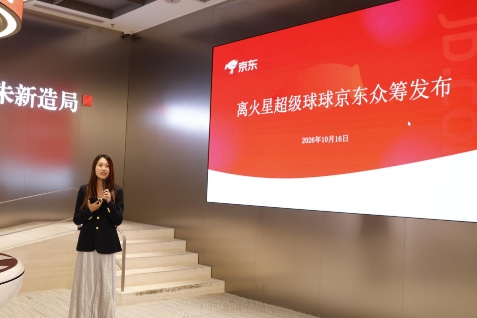
以首款产品发售为起点，推进全球市场布局
自8月28日在上海全球首发以来，丑小鸭先后亮相德国IFA、土耳其GITEX、上海工博会等国际展会，并获得BBC等多家海外媒体报道，让这款融合安徒生经典童话与中国AI技术的产品受到更多国际关注。此次在北京启动全球预售，进一步将展会上的展示与交流，转化为面向家庭的产品体验与购买服务。
超级有爱联合创始人、市场总监何昌耀在活动中介绍，公司将在推进中国市场销售的同时，拓展欧洲、北美、日本等海外市场，持续建设线上销售渠道、线下体验网点及当地合作伙伴体系。
作为安徒生系列首款开启发售的产品，丑小鸭也将为后续系列产品的海外推广积累经验，推动经典童话与AI互动相结合的成长伙伴走进更多国家的家庭。
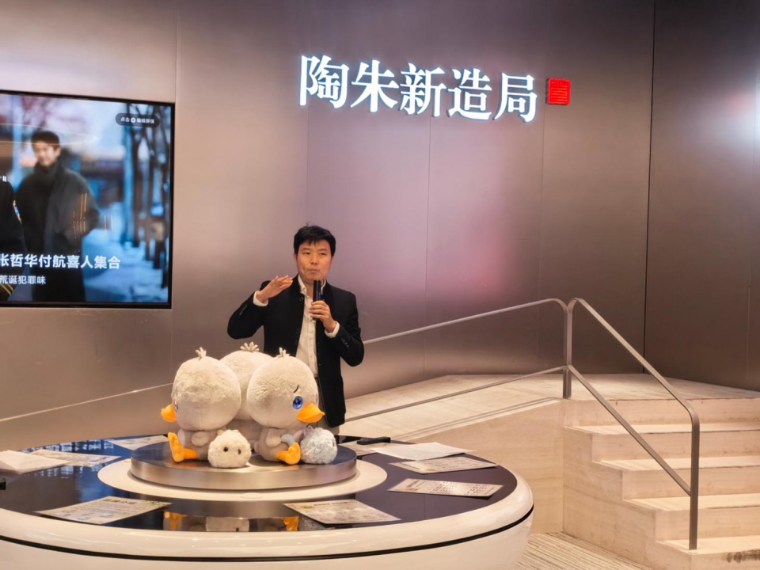
相关报道：IT168、中原新闻网、商业时报
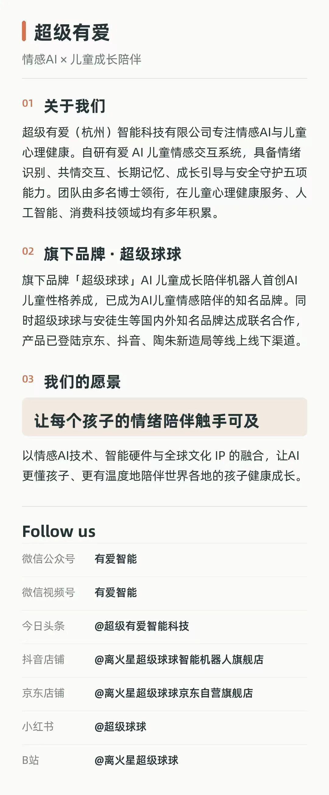